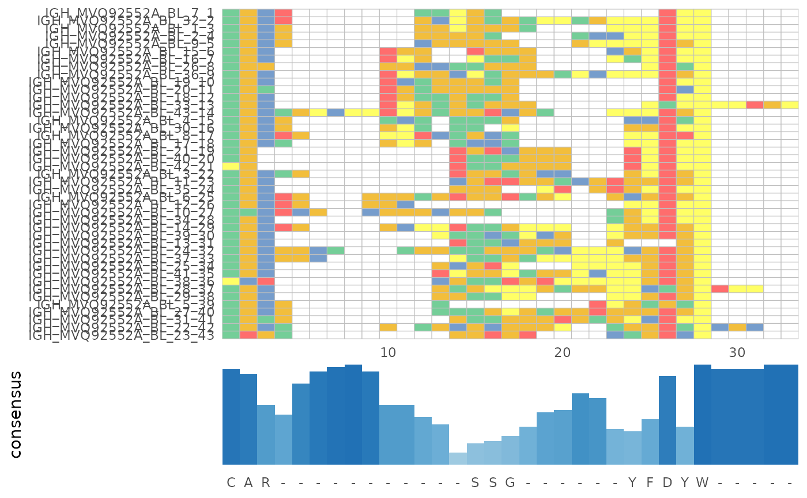

Generate MSA alignment figures from the results of alignSeq()
Arguments
- msa
An msa object obtained from
alignSeq()function in LymphoSeq2.
See also
The function utilizes ggmsa package for visualizations. Further details on ggmsa can be found at the link mentioned below. https://cran.r-project.org/web/packages/ggmsa/vignettes/ggmsa.html
Examples
library(ggmsa)
#> ggmsa v1.14.1 Document: http://yulab-smu.top/ggmsa/
#>
#> If you use ggmsa in published research, please cite:
#> L Zhou, T Feng, S Xu, F Gao, TT Lam, Q Wang, T Wu, H Huang, L Zhan, L Li, Y Guan, Z Dai*, G Yu* ggmsa: a visual exploration tool for multiple sequence alignment and associated data. Briefings in Bioinformatics. DOI:10.1093/bib/bbac222
file_path <- system.file("extdata", "IGH_sequencing", package = "LymphoSeq2")
study_table <- LymphoSeq2::readImmunoSeq(path = file_path, threads = 1)
#> Dataset Analysis:
#> Files: 10, Total: 0.00 GB, Largest: 0.0 MB
#> Available memory: 11.9 GB
study_table <- LymphoSeq2::topSeqs(study_table, top = 100)
nucleotide_table <- LymphoSeq2::productiveSeq(study_table,
aggregate = "junction")
msa <- LymphoSeq2::alignSeq(nucleotide_table,
repertoire_id = "IGH_MVQ92552A_BL",
type = "junction_aa", method = "ClustalW"
)
#> use default substitution matrix
LymphoSeq2::plotAlignment(msa)
#> Coordinate system already present.
#> ℹ Adding new coordinate system, which will replace the existing one.
#> Warning: No shared levels found between `names(values)` of the manual scale and the
#> data's fill values.
#> Warning: No shared levels found between `names(values)` of the manual scale and the
#> data's fill values.
